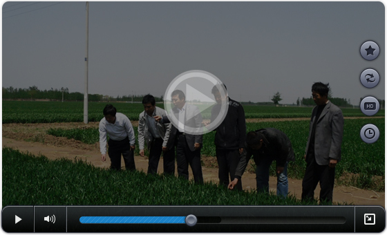

示范户小麦技术指导方案
上传时间：2015-08-24 21:50 点击次数：12次
一、播种技术
1、选用优质高产品种：如周麦22、矮抗58、众麦1号、周麦18等。
2、精细整地：一要深耕，二要底墒足，三是旋耕机耕地，要镇压之后再播种；如不镇压，土壤过于疏松，易导致麦苗冻害或影响幼苗正常生长。
3、平衡施肥，施足底肥 亩底施农家肥3—4方，纯氮7—9公斤 ，纯磷6—7公斤 ，纯钾5—8公斤 ，折合亩底底施尿素15—19公斤，过磷酸钙50公斤左右或磷酸二铵13—15公斤 ，硫酸钾或氯化钾10—5公斤...或配方肥亩用量40—50公斤。